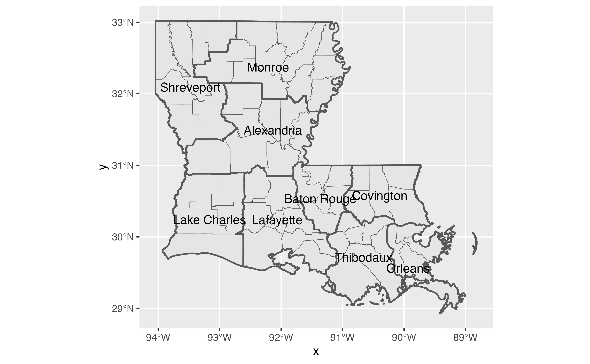
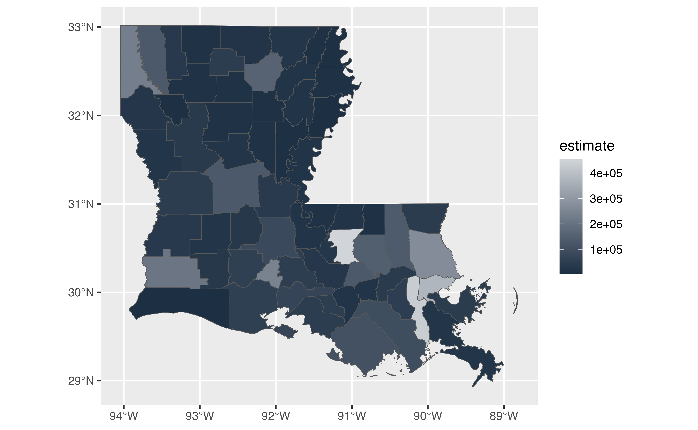
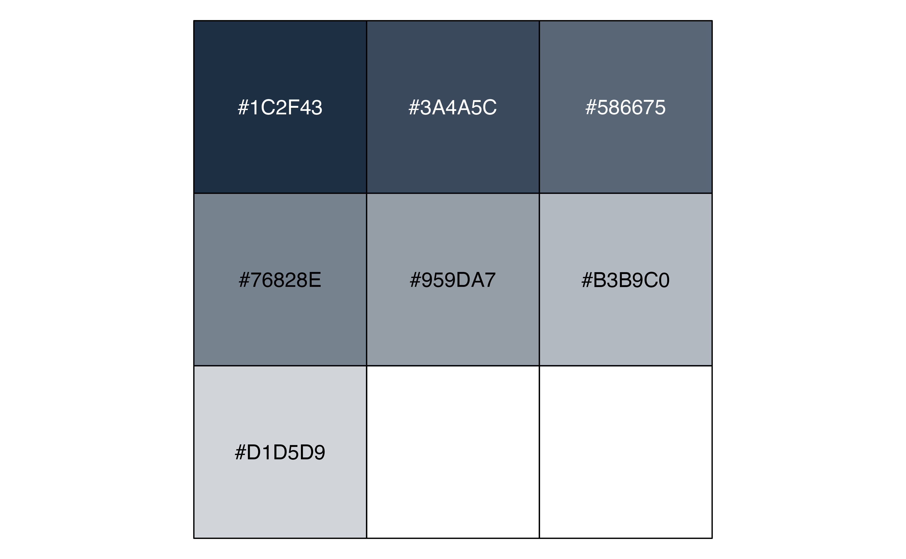
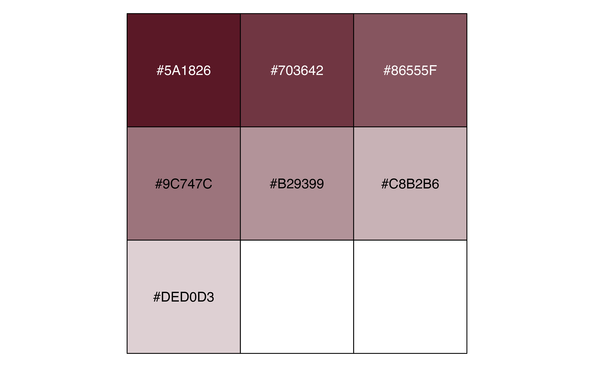

A package for Blanco Center staff
This package includes resources to help achieve a cohesive look for Blanco Center data visualizations. The main use of blancocentR is in conjunction with ggplot2, but colors can be used across other tools, and the included data can be useful for applications that don’t involve data visualizations.
Version 1.0.0 updates (Fall 2025):
ggplot themes
theme_bc()got a major update, including new features released in ggplot2 4.0.0. and no longer relies on {sysfonts} and {showtext}the original
theme_bc()is now available undertheme_bc_legacy()added
theme_lafirst()new: gt theme
- added
gt_theme_bc()to style gt tablescolors
- added LA FIRST colors
data
- included long-format versions of
louisianaandparishes
The data
BlancocentR includes two datasets available as objects that should
help working with Louisiana’s 64 parishes and region designations by
different state agencies or other organizations: While the tibble
parishes includes the parishes and regions,
louisiana is an sf object which includes population
estimates, geometry, and center points for each parish in addition to
what is included in parishes. Both are now available in
long-format as well (parishes_long and
louisiana_long).
You can access the data via blancocentR::parishes and
blancocentR::louisiana, or you can load them into your
environment. Let’s load both!
We can now plot a simple map of Louisiana with outlines for each parish.

We can use the ‘fill’ aesthetic to designate different regions, e.g., DCFS regions.
p2 <- ggplot(louisiana) + geom_sf(aes(fill = region_name_DCFS), show.legend = FALSE)
p2 + labs(title = "Louisiana regions designated by DCFS")
The long format
In the 1.0.0 update, we include long-format versions of the data:
parishes_long and louisiana_long. All region
names are now stored in the variable region_name while
region numbers are in region_number. Organizations/agencies
are in the variable org. You can filter for the agency you
want and call the regions like in the next example.
Getting region polygons
Sometimes it’s useful to not only have the parish polygons but also
region polygons. Maybe you’d like to map Louisiana’s parishes and show
region boundaries without using ‘fill’ for regions. Maybe you’d like to
plop each region’s name in the center of their area. We can do that
using get_region_geometry(). Let’s use DCFS regions again
for this example!
dcfs_regions <- get_region_geometry(louisiana, region_DCFS, region_name_DCFS)Our sf object has changed from 64 observations (one for each parish) to 9 observations (one for each DCFS region). Let’s plot a map!
ggplot(dcfs_regions) +
geom_sf(data = louisiana) + # parish boundaries
geom_sf(lwd = 0.7, fill = NA) + # region boundaries
geom_sf_text(aes(label = region_name_DCFS)) # region names
The themes
This package includes the Blanco Center theme,
theme_bc(), theme_bc_legacy(), and
theme_lafirst() for ggplot styling, and
gt_theme_bc() for gt table styling.
theme_bc()
Please note that
theme_bc()now requires ggplot2 ver. 4.0.0 or higher, as it ships with functionality released in the ggplot2 update (e.g., the argumentsink,paper, andaccent). The original version oftheme_bc()is now available under a new name:theme_bc_legacy()if you are reluctant to update ggplot2. The argumentsbase_fontandtitle_fonthave been renamed tobase_familyandheader_family, respectively, to be in line with ggplot2 argument names.
BlancocentR includes the Blanco Center theme,
theme_bc(). The theme defines the use of font families,
sizes, and colors for different aspects of the plot structure. The base
text is defined as using the sans serif font (“Quicksand”) in
size 12 and color light_text (“#575E66”). The plot
structure (e.g., axis lines, ticks, and text) all use the color
light_text as well, only titles (plot title, legend title,
and axis titles) are more emphasizes by using serif font
“Bitter” and the color dark_text (“#1A242F”). For extra
emphasis and ULL color branding, the plot title uses
ull_red (“#a00b0b”). New arguments that came with the
ggplot2 4.0.0 update include 1) ink, the foreground color
which is by default light_text, 2) paper, the
background color, “white” by default, and 3) accent, the
accent color col_la (“#4776aa”) by default. The default
position for the legend defined by this theme is on top of the plot in a
horizontal direction but that can be changed as needed. You can
customize the theme by changing its arguments.
Let’s create some additional example plots to use throughout this tutorial.
library(scales)
p3 <- ggplot(trees, aes(x = Girth, y = Height)) +
geom_point(aes(size = Volume)) +
geom_smooth() +
labs(title = "This is a title",
subtitle = "This is a subtitle",
caption = "This is a caption")
p3
Let’s see how plot p3 looks when we add our theme:
p3 + theme_bc()ink, paper, accent
With the release of ggplot2 4.0.0, we got additional arguments to
style the colors of our plot. ink for foreground colors,
paper for background colors, and accent for
accent colors. By default, these are set in theme_bc() as
follows:
theme_bc(ink = light_gray, paper = "white", accent = col_la, overwrite_ink = TRUE).
The argument overwrite_ink is set to TRUE by default, which
means that even though ink is set to
light_gray, certain elements that inherit their color from
ink, are different colors as defined in the theme settings.
Let’s take another look at plot p3 with default
theming.
p3
By default, ink is “black” while the line in
geom_smooth() is blue (“#3366FF”). If we apply
theme_bc(), the points will be light_text,
while other foreground elements will be either ull_red
(plot title), dark_text (axis titles and legend titles), or
light_text (everything else). The accent line is now
col_la.
p3 + theme_bc()
By default, theme settings in theme_bc() overwrites
ink almost everywhere. We can change that using the
overwrite_ink argument in the function. Let’s try out a
different look!
p3 + theme_bc(
overwrite_ink = FALSE,
ink = "seashell",
paper = "skyblue4",
accent = "goldenrod"
)
Grid lines
If you like, you can add grid lines. For p3, we can add
x grid lines, y grid lines, or both. Let’s add only x grid lines
here.
p3 + labs(title = "Now with grid lines!") +
theme_bc(grid_x = TRUE) +
theme(legend.position = "none") # remove legend
Void
Most maps look better without any axes. We can take advantage of the ‘void’ argument to remove all axes in one simple step.

Legacy
We replaced the old theme_bc() with the new version,
embracing ggplot2 4.0.0. This means that users must update to ggplot2
4.0.0 or later to use the updated theme. However, for users who don’t
wish to do so, the legacy version of the theme is still available in the
package, under theme_bc_legacy().
theme_lafirst()
A new addition to the package is theme_lafirst(), an
adaptation of theme_bc() for use in LA FIRST reporting.
Let’s take a look at p3 with the LA FIRST theme.
p3 + theme_lafirst()
gt_theme_bc()
Another new addition is the Blanco Center theme for gt tables! You’ll
notice it looks quite similar to the BC ggplot theme. It carries over
font families and colors for text, and sizing is quite similar as well.
You can customize most aspects in the theme arguments, like base size,
font families, text color, or other options you define inside
tab_options().
Let’s first look at a standard gt table, using the
gtcars dataset that comes with the gt package.
library(gt)
gt1 <- gtcars %>%
head(10) %>%
select(mfr:hp, trq, ctry_origin) %>%
gt(rowname_col = "mfr") %>%
tab_header(
title = 'Ferrari & Horsepower',
subtitle = md('Data is courtesy of the {gt} *R package*'),
) %>%
tab_source_note("A source note here") %>%
tab_source_note("Another source note here") %>%
tab_footnote("This is the highest hp (footnote)",
locations = cells_body(columns = hp, rows = hp == max(hp))
) %>%
tab_footnote("This is the lowest trq (footnote)",
locations = cells_body(columns = trq, rows = trq == min(trq))) %>%
tab_caption("A caption here") %>%
tab_stubhead(label = "Make") %>%
tab_row_group(
label = "Italy",
rows = ctry_origin == "Italy"
) %>%
tab_row_group(
label = "United States",
rows = ctry_origin == "United States"
) %>%
tab_spanner(
label = "Body",
columns = c(trim, bdy_style)
) %>%
tab_spanner(
label = "Specs",
columns = c(hp:trq)
) %>%
cols_hide(ctry_origin)
gt1| Ferrari & Horsepower | ||||||
| Data is courtesy of the {gt} R package | ||||||
| Make | model | year |
Body
|
Specs
|
||
|---|---|---|---|---|---|---|
| trim | bdy_style | hp | trq | |||
| United States | ||||||
| Ford | GT | 2017 | Base Coupe | coupe | 647 | 550 |
| Italy | ||||||
| Ferrari | 458 Speciale | 2015 | Base Coupe | coupe | 597 | 1 398 |
| Ferrari | 458 Spider | 2015 | Base | convertible | 562 | 1 398 |
| Ferrari | 458 Italia | 2014 | Base Coupe | coupe | 562 | 1 398 |
| Ferrari | 488 GTB | 2016 | Base Coupe | coupe | 661 | 561 |
| Ferrari | California | 2015 | Base Convertible | convertible | 553 | 557 |
| Ferrari | GTC4Lusso | 2017 | Base Coupe | coupe | 680 | 514 |
| Ferrari | FF | 2015 | Base Coupe | coupe | 652 | 504 |
| Ferrari | F12Berlinetta | 2015 | Base Coupe | coupe | 731 | 509 |
| Ferrari | LaFerrari | 2015 | Base Coupe | coupe | 2 949 | 664 |
| 1 This is the lowest trq (footnote) | ||||||
| 2 This is the highest hp (footnote) | ||||||
| A source note here | ||||||
| Another source note here | ||||||
Now we’ll give it a refresh with our theme!
gt1 %>% gt_theme_bc()| Ferrari & Horsepower | ||||||
| Data is courtesy of the {gt} R package | ||||||
| Make | model | year |
Body
|
Specs
|
||
|---|---|---|---|---|---|---|
| trim | bdy_style | hp | trq | |||
| United States | ||||||
| Ford | GT | 2017 | Base Coupe | coupe | 647 | 550 |
| Italy | ||||||
| Ferrari | 458 Speciale | 2015 | Base Coupe | coupe | 597 | 1 398 |
| Ferrari | 458 Spider | 2015 | Base | convertible | 562 | 1 398 |
| Ferrari | 458 Italia | 2014 | Base Coupe | coupe | 562 | 1 398 |
| Ferrari | 488 GTB | 2016 | Base Coupe | coupe | 661 | 561 |
| Ferrari | California | 2015 | Base Convertible | convertible | 553 | 557 |
| Ferrari | GTC4Lusso | 2017 | Base Coupe | coupe | 680 | 514 |
| Ferrari | FF | 2015 | Base Coupe | coupe | 652 | 504 |
| Ferrari | F12Berlinetta | 2015 | Base Coupe | coupe | 731 | 509 |
| Ferrari | LaFerrari | 2015 | Base Coupe | coupe | 2 949 | 664 |
| 1 This is the lowest trq (footnote) | ||||||
| 2 This is the highest hp (footnote) | ||||||
| A source note here | ||||||
| Another source note here | ||||||
The colors
This package includes several color palettes, list of named colors, and individual colors. Please note that accessing some of the colors may be different when you use this package from your experience sourcing colors from R scripts.
Named colors
Named colors are accessible once you’ve loaded this package without showing up in your environment.

Miscellaneous colors
Miscellaneous colors are still available by name. You can call any
specific color from this collection by naming it specifically, e.g.,
misc_pal$jadegreen, or print the whole list by calling
misc_pal.
library(scales)
list(
# row 1
"midnight" = "#243e56",
"mint" = "#bcefde",
"berry" = "#8f555a",
"sand" = "#e8d5a6",
"mustard" = "#ae9837",
# row2
"charcoal" = "#3c424e",
"jadegreen" = "#4e7a59",
"pastelgreen" = "#7fc791",
"deepforest" = "#253a2a",
"darkteal" = "#23464f", # urban
# row 3
"cloudfree" = "#62c3dc",
"midblue" = "#5ea2e3",
"silver" = "#94b3b0",
"strawberry" = "#d24a41", # rural
"peachy" = "#f9785e",
# row 4
"blush" = "#eb8d83",
"darkcherry" = "#852f29",
"darkplum" = "#4f2f32",
"darkmaroon" = "#5e3934",
"lilac" = "#a8b9da",
# row 5
"vintageviolet" = "#77839b" # 9th region color
)
The miscellaneous palette is also available as palette function to use directly in ggplot with discrete variables. See Palette functions on palette functions in general, and Miscellaneous palette on how to use this palette.
New LA FIRST colors
LA FIRST includes two additional colors that can be used in
conjunction with the miscellaneous palette misc_pal:
lafirst_pal. Similarly to calling colors from
misc_pal, you can access these colors by name, e.g.,
lafirst_pal$smokyorchid.
list("tealsea" = "#398F88", "smokyorchid" = "#A581B3" )
Suggested palettes
We suggest to be mindful of harmful stereotypes when visualizing data aggregated by e.g., race or gender, and to consider using alternative aesthetic mapping (e.g., x and y variables, facets) where possible. However, in cases where it makes the most sense to assign colors to such population groups, LA FIRST suggests to use the following colors for races and genders, contained in designated color palette vectors.
library(tidyr)
race_pal <- list(
"white" = misc_pal$jadegreen,
"black" = col_la,
"hispanic" = misc_pal$strawberry,
"asian" = lafirst_pal$orchid,
"other" = misc_pal$mustard
)
race_muted_pal <- list(
"white" = misc_pal$deepforest,
"black" = misc_pal$midnight,
"hispanic" = misc_pal$berry,
"asian" = misc_pal$vintageviolet,
"other" = misc_pal$mustard
)
sex_gender_pal <- list(
"men" = lafirst_pal$tealsea,
"women" = misc_pal$peachy
)Palette functions
Palette functions generate a list of colors and can be used directly
in your ggplot code using, e.g. scale_color_manual() or
scale_fill_manual(), depending on how you mapped your
aesthetics.
Region palettes
Region palettes map each region identifier to a specific color. Region identifiers can be either names or numbers. Let’s take a look:
p4 <- ggplot(louisiana) +
geom_point(
aes(x = estimate, y = region_name_DCFS, color = region_name_DCFS),
size = 3) +
scale_x_continuous(labels = label_number(scale_cut = cut_short_scale())) +
labs(title = "Louisiana population in 2023",
subtitle = "Parish population by DCFS region",
caption = "Source: U.S. Census, 2023 ACS 5-Year estimates, Table B01003",
y = NULL,
x = NULL)
p4 +
scale_color_manual(values = dcfs_palette()) +
theme_bc() +
theme(legend.position = "right")
Similarly to the color aesthetics, we can map fill:
p2 +
scale_fill_manual(values = dcfs_palette()) +
theme_bc(void = TRUE) +
theme(legend.position = "right")This works because we mapped the color/fill aesthetics to the
variable region_name_DCFS (as you can see in the legend
title). Any region color palette will assign the colors to the region
name as opposed to the region number by default. In our object
dcfs_regions, we have the numeric variable
region_DCFS and the character variable
region_name_DCFS. Other region variables in
parishes and louisiana follow the same
pattern.
If you prefer to map color to the region number instead, you’ll need
to convert the region’s numeric value to a discrete value (e.g., by
using factor()) and specify the use of region number rather
than region name inside dcfs_palette() via the ‘region’
argument. In this step, we can also darken the color for region 9 -
Monroe using the darken argument.
ggplot(louisiana) +
geom_point(aes(
x = estimate,
y = region_name_DCFS,
color = factor(region_DCFS) # note the use of factor()
)) +
scale_x_continuous(labels = label_number(scale_cut = cut_short_scale())) +
scale_color_manual(values = dcfs_palette(
region = "number", # use "number" instead of default "name"
darken = 1 # darken by 1
)) +
labs(title = "Louisiana population in 2023",
subtitle = "Parish population by DCFS region",
caption = "Source: U.S. Census, 2023 ACS 5-Year estimates, Table B01003",
y = NULL,
x = NULL) +
theme_bc() +
theme(legend.position = "right")
Our legend title is now “factor(region_DCFS)” and the colors are mapped to the numeric counterpart of our region names.
Gradient palettes
Gradient palettes, just like the other palettes in blancocentR,
generate colors. The default number of colors is 7 but you can adjust
the number of colors using the n argument. Because the
function generates a number of colors, we can’t use it directly for
continuous variables, only for discrete variables. However, we can make
use of scale_fill_gradient() by defining the ‘low’ and
‘high’ arguments like so:
ggplot(louisiana) +
geom_sf(aes(fill = estimate)) +
scale_fill_gradient(
low = la_gradient_palette()[1],
high = la_gradient_palette()[7]
)In the previous example, we use the 7th color as high
because we didn’t define the number of colors the palette generates. By
default, this number is 7, so the 7th color is the lightest color. We
can achieve the exact same result by generating n colors and selecting
the nth value as high, e.g. using n = 2:
ggplot(louisiana) +
geom_sf(aes(fill = estimate)) +
scale_fill_gradient(
low = la_gradient_palette()[1],
high = la_gradient_palette(n = 2)[2]
)
Note: You could also adjust the base color used to generate
the palette with the base argument, but that’s not
recommended. Under the hood, the function uses
monochromeR::generate_palette()1.
Here are all gradient palettes:




A slightly different version exists in gradient(), a
function that a list of colors and lightens them via
colorspace::lighten() and sequentially between 0% and 100%.
Users can customize the number of steps in the function argument
n, 11 by default to achieve colors in 10% intervals. In the
example below, we lighten col_la in 20% intervals.
col_la_gradient <- gradients(colors = c("color" = col_la), n = 6)
col_la_gradient
#> $color100
#> [1] "#4776aa"
#>
#> $color80
#> [1] "#6690C4"
#>
#> $color60
#> [1] "#84ABE0"
#>
#> $color40
#> [1] "#A1C7FD"
#>
#> $color20
#> [1] "#D1E3FF"
#>
#> $color0
#> [1] "#FFFFFF"
col_la_gradient %>% paste %>% show_col()
Miscellaneous palette
You can access the miscellaneous colors in two ways: 1) via printing
the list of named colors and/or individual directly to your console (see
Miscellaneous colors), or 2) via the
function misc_palette(). Just like other palette functions
in blancocentR, this function will generate colors, 21 to be exact. You
can use these colors directly with ggplot using
scale_*_manual(values = misc_palette()), depending on how
you have mapped your aesthetics. This will work as long as 1) your
variable is discrete, and 2) your variable doesn’t exceed 21 distinct
levels2.
p4 +
scale_color_manual(values = misc_palette()) +
theme_bc() +
theme(legend.position = "none") +
labs(subtitle = "These are colors from the Miscellaneous palette!")show_cvd()
Wait, what about this other function we haven’t talked about?
show_cvd() is a helper function that allows you to quickly
compare what your selected colors might look like to someone with color
vision deficiency, or if you print them in gray-scale.
The output shows 5 rows:
your original input colors
deuteranope simulation (green cone cells defective)
protanope simulation (red cone cells defective)
tritanope simulation (blue cone cells defective)
desaturated (gray-scale)
show_cvd(misc_palette(n = 5))
Note: Under the hood, the function uses
scales::show_col()3 and functions from the {colorspace}4
package.